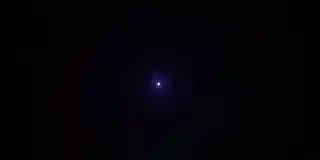
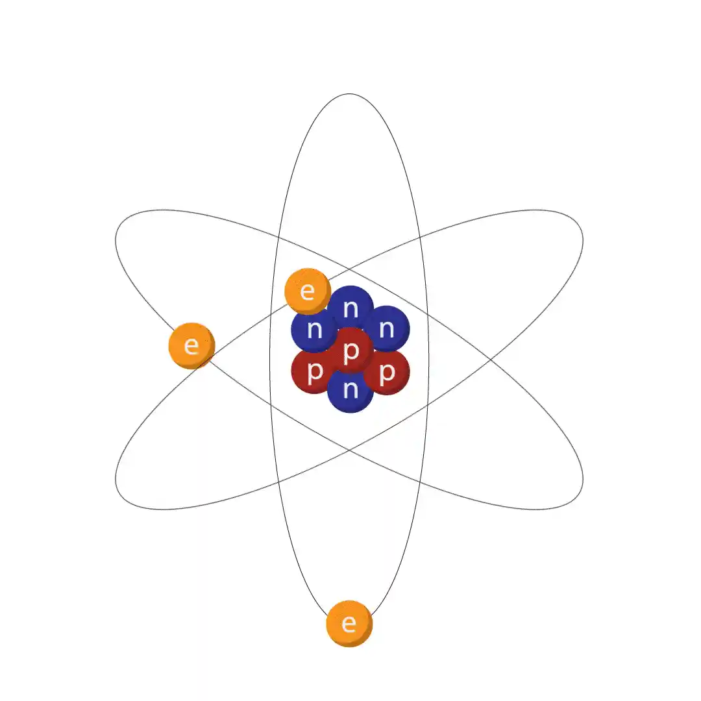
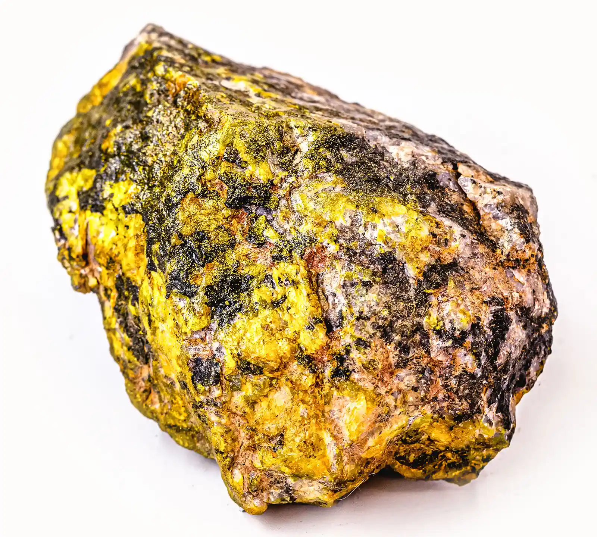
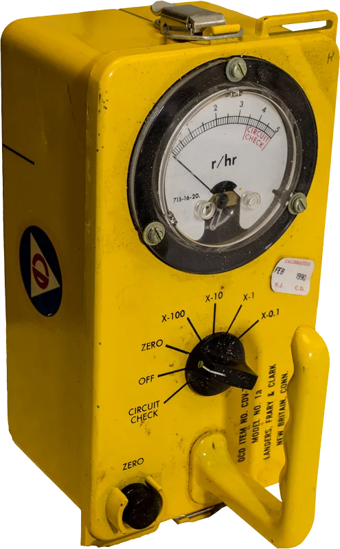
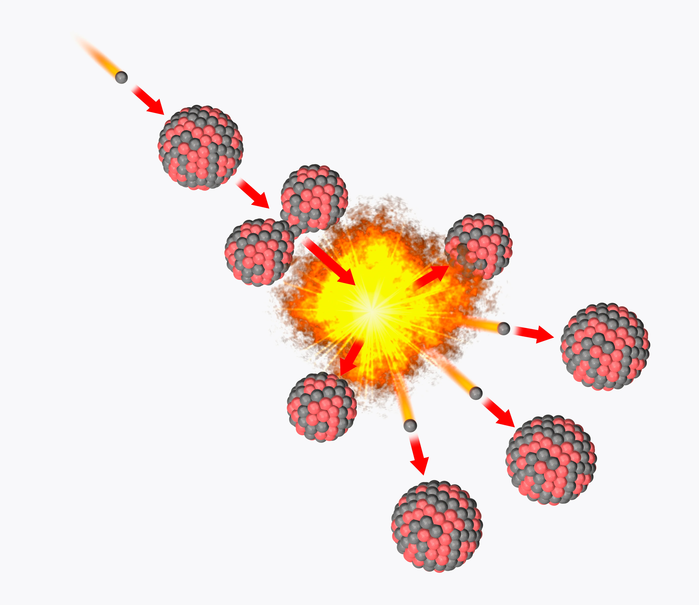
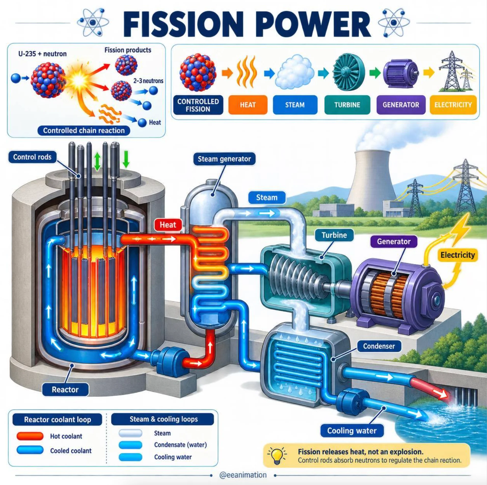
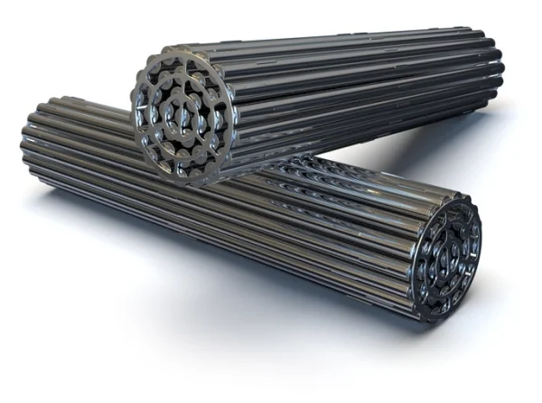
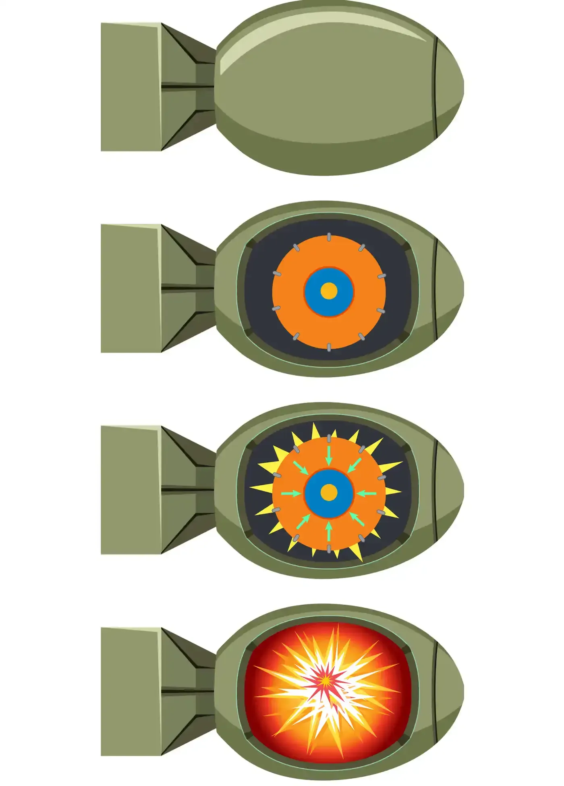
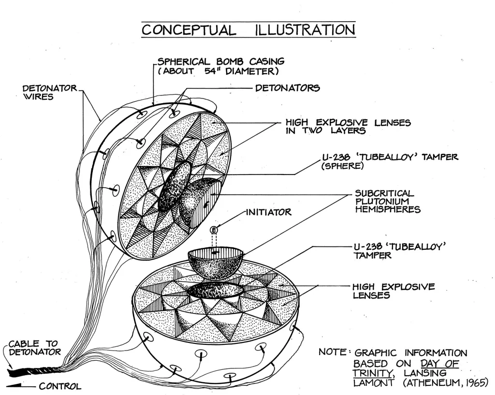
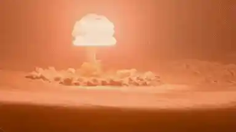

SCIENCE
IN THE BEGINNING...
The universe expanded from a hot dense state, a point of
infinite mass and infinitesimally small volume. The energy
was released and expanded into the cosmos.
In the first minutes, the atoms were super hot, about 18
billion degrees celsius hot
18, 000 , 000 ,000 ċ
Electrons neutrons and protons formed once it cooled enough.
A few minutes after that, Hydrogen and Helium were formed. It
wouldn’t be until millions and billions of years later that
oxygen and iron would form.
Nuclear reactions would happen around this time to make stars
1
H
Hydrogen
1.008
Hydrogen element

Theorized graphic of the Big Bang

Atomic diagram
ATOMS
An atom is the fundamental unit of the universe and matter as a whole.
There’s no atomic energy or bombs without these little guys.
Atoms are made of simple forces.
The Nucleus:
is the center, composed of 99.99% of all the matter of 1 atom, making up less than 1% of the total volume.
It’s made of the Positive Protons and Neutral Neutrons.
The Cloud of Electrons:
around the nucleus are Negatively Charged. They allow atoms to bond and stay together.
Atoms need humongous amounts of energy to contain all these particles together.
ATOMIC RAYS
Radiation is in forms of non-ionizing radiation and ionizing radiation.
Non-ionizing:
Microwaves, radio waves, visible light.
Non-ionizing is everything from your microwaved dinner to the internet and digital tech uses these, letting the modern world be comfortable and entertained.
Ionizing:
X-rays, gamma-rays, UV.
Ionizing is stuff like bombs, power plants and medical tech use this heavy duty power.
92
U
Uranium
238.03
Uranium element

Uranium ore

Geiger counter
NOT TOO COMPLICATED
Radiation levels are measured in
Rad
Rads (rad) are units of radiation energy does absorbed by unit of mass.
1 rad = 0.01Gy=0.01 J/kg
Sievert
Sieverts (Sv) calculate the amount of harm and health effects that ionizing
radiation can potentially do to tissues and substances.
It takes into account the energy absorbed, tissue sensitivity, and and (ie: 5000kib).
Those fancy Geiger Counters actually measure Counts per second (cps), counting raw number of ionizing radiation particles and waves like beta and x rays.
ATOMIC ENERGY
The basic process behind the atomic energies we use in modern life are:
Nuclear Fission:
Producing energy from splitting apart atoms
Fission uses unstable, easy-to-split atoms like Uranium-235 (a rare
isotope of Uranium). A low-power neutron is fired at a uranium atom,
splits it, sends those neutrons flying to do the same thing. It’s a
chain reaction that generates tons of heat energy to move things like
a steam engine!
Nuclear Fusion:
Producing energy from making new atoms.
Fusion generates energy by fusing matter together. Hydrogen isotopes
that repel each other are use fission power to fuse, generating more energy
than the fission. This is seen in things like the sun and hydrogen bombs.

Fission view

Fission reactors

Uranium reactor rods

Atomic Bomb (model Fat-Man/Little Boy 1945)

Atomic Bomb energy core

Total nuclear wasteland
Protests against the nukes
ATOM BOMBS
Though Morbid, it’s important to acknowledge this part. Fusion weapons like hydrogen bombs are
far more destructive than the fission weapons used in WWII. uranium and plutonium weapons are
still ready to be used in a global thermonuclear conflict.
Such a conflict would result in the death of billions and the irradiation of earth to appoint of near
inhospitality. Nuclear winters would devastate many key infrastructure and agricultural points needed for our
population to maintain its current amount. Life is resilient and will come back to flourishing, but the same
cannot be said for human life which is inventive but fragile in dire circumstances.
We have enough radioactive weapons to destroy our society/planet almost 50 times over. Our stockpile of precise
and armageddon bombs is well over 9,000. It would only take 300 to 400 of these to end it all.

MORE
United Nuclear
United Nuclear is a retail based site, distributing radiation based recources for curious and professional minds to obtain, ranging from merchandise to scientific equipment.
IAEA
The International Atomic Energy Agency is the world's central intergovernmental forum for scientific and technical cooperation in the nuclear field. It works for the safe, secure and peaceful uses of nuclear science and technology.
CDC
The Center for Disease Control offers online recources do document, explain and list pripority steps in radiation saftey in the danger cases of uranium and fallout.
ICRP
The International Comission on Radiological Protection documents recommendations and advice as papers in various scientific journals in the fields of medicine and physics.
Atomic Museum
The National Atomic Testing Museum is a repository for one of the most comprehensive collections of nuclear history. The museum covers the period from the nation’s first nuclear test, code-named Trinity, to the first test at the Nevada Test Site in 1951, to the today's late nuclear age.